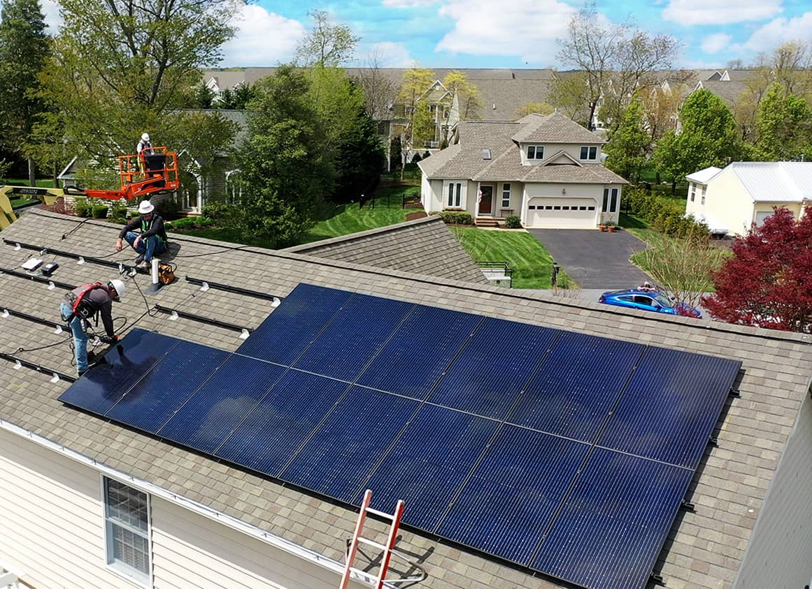

Harnessing Solar Energy for a Sustainable Neighborhood
Households Simulated
Days Simulated
Energy Scenarios

Residential solar systems are transforming how neighborhoods generate electricity. Smart system design reduces costs, lowers emissions, and improves energy independence.
Every household type, every income level, one shared problem. Here is what it costs each of them.
—
—
—
Aggregated totals for the full 24-household neighborhood over 360 simulated days.
Studio or large family, without solar every kilowatt-hour consumed is a kilowatt-hour billed. Consumption patterns differ, but the dependency is universal.
Based on 360-day simulation · Grid rate: $0.0075/kWh · CO₂ factor: 0.444 kg/kWh (CFE Mexico)
The more affluent the household, the higher the consumption multiplier, and the higher the grid bill. Solar changes that equation for everyone.
Average per household · Grid rate: $0.0075/kWh · CO₂ factor: 0.444 kg/kWh (CFE Mexico)
Solar energy solves the supply problem. Human behavior creates the timing problem.
Each point is the average power (kW) at that hour, computed across all simulated days · no_solar scenario
This shape is known as the Duck Curve. At noon, solar floods the grid with cheap energy nobody needs. By 7 PM, the sun is gone and demand surges, forcing the grid to ramp up fast or charge expensive rates. The six numbers below quantify exactly how wide that gap is.
—
—
—
18 to 20 h
—
0 kW
Values shown for the Well Designed System scenario · Hourly averages computed across all simulated days.
Those 7 hours separate the moment of maximum supply from the moment of maximum need.
Installing solar is not enough. A poorly designed system can leave you almost as dependent on the grid as before, paying nearly the same bills, producing nearly the same emissions.
A poorly designed system covers barely half your energy needs. A well-designed one makes you nearly independent.
The difference between scenarios is not the technology. It is the design.
| Scenario | Annual Cost | CO₂ Avoided | Self Sufficiency | Savings vs No Solar |
|---|
Full at noon. Empty at night. Remember those 7 hours? This is what happens inside the battery during that gap. One system arrives at peak demand with something left. The other does not.
Hourly averages computed across all simulated days · Battery SoC at 18h marks the start of peak demand
Day after day, week after week, month after month. The numbers change but the story does not. The unadvised system does not have bad days. It has a bad design.
Grid Imported = energy the system had to purchase from the utility grid · Totals for the full neighborhood
Generation, consumption, imports and exports broken down by household type and wealth level. Not every household pays the same price for a bad design.
Each dot is a household. Points above the break-even line consume more than they generate. With the unadvised system, most of them do, and they all have solar panels on the roof.

When panel capacity, battery size and energy management are properly designed, every metric shifts in your favor.
Annual Savings vs No Solar
CO₂ Avoided (kg)
Energy Self Sufficiency
Only a well-designed system crosses the break-even line. The other two are still paying. One of them has solar panels.
Net annual cost = grid import cost − grid export revenue · Break-even at $0 · Negative = system earns money
A well-designed system does not just reduce emissions. It goes negative, exporting clean energy that displaces dirty grid generation for everyone connected to it.
CO₂ emissions = total load × 0.444 kg/kWh (CFE Mexico grid factor) · CO₂ avoided = baseline − actual emissions
"The technology exists. The data is clear.
The only variable left is the decision."
References
Nowak, D. J., & Crane, D. E. (2002). Carbon storage and sequestration by urban trees in the USA. Environmental Pollution, 116(3), 381–389. https://doi.org/10.1016/S0269-7491(01)00214-7
U.S. Environmental Protection Agency. (2024). Greenhouse gas equivalencies calculator — calculations and references [Factor: 0.243 kg CO₂e/km, gasoline passenger vehicle]. https://www.epa.gov/energy/greenhouse-gas-equivalencies-calculator-calculations-and-references
U.S. Environmental Protection Agency. (2024). Greenhouse gas equivalencies calculator — calculations and references [Factor: 4,798 kg CO₂/home/year]. https://www.epa.gov/energy/greenhouse-gas-equivalencies-calculator-calculations-and-references
Secretaría de Medio Ambiente y Recursos Naturales. (2025, February 28). Aviso: Factor de emisión del Sistema Eléctrico Nacional 2024. Comisión Reguladora de Energía. https://www.gob.mx/cms/uploads/attachment/file/981194/aviso_fesen_2024.pdf